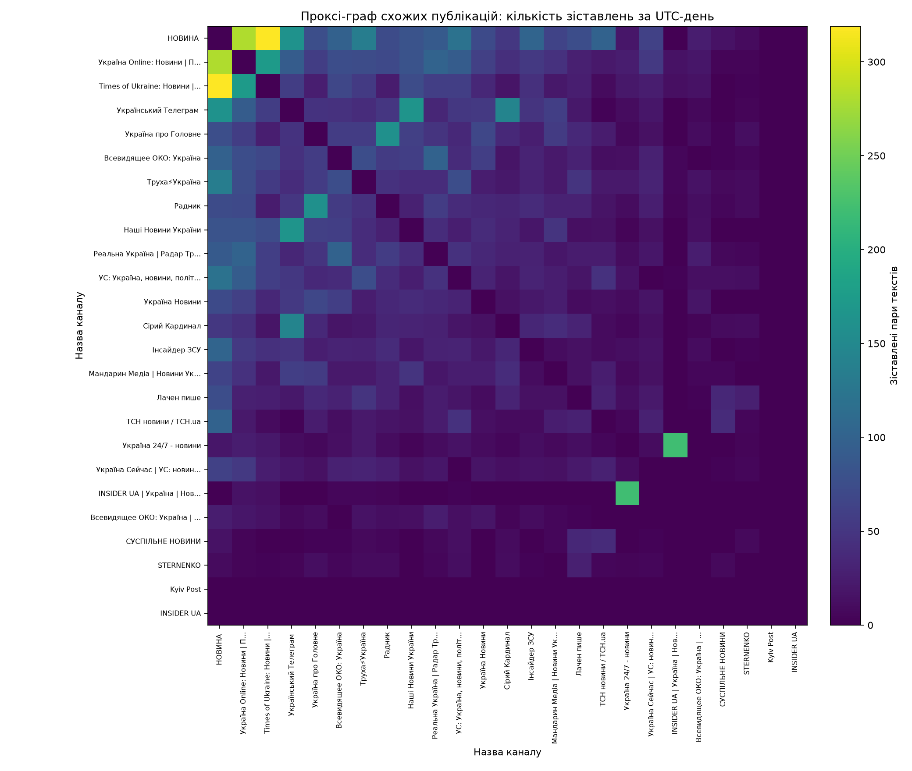

Python / NLP / графові алгоритми · експериментальний проєкт, 2026
На реальних публічних повідомленнях українських Telegram-каналів побудувати граф тематичної подібності, а потім порівняти статичні й адаптивні стратегії вибору вузлів у синтетичній моделі інформаційного поширення.
За середньої модельної інтенсивності та бюджетом у 4 початкові вузли: Adaptive Degree — 9,117 активованих вузлів у середньому; Static Greedy — 8,033. Це результати симуляції, а не фактичні репости чи підтверджений психологічний вплив.

Python-скрипти етапів 1–10, методичні описи, контрольні CSV та збережені графіки. Великий корпус, 25-МБ проміжний JSONL, 13-МБ файл усіх прогнозів, .venv та локальні IDE-файли не включені.
telegram_stage1_inspect.py. Джерело корпусу вказано у скрипті (публічний датасет Aisberg на Hugging Face).results_september_stage8/stage8_results.csv і results_september_stage10/stage10_results.csv.Роль AI: під час пілотної емоційної розмітки використовувалися AI-assisted чернеткові мітки з ручним переглядом; це не незалежний еталонний розмічений датасет. Код і оцінювання мають окрему методологію.